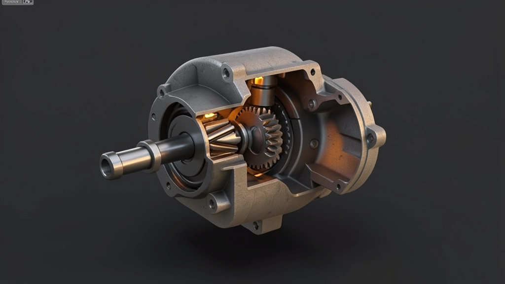
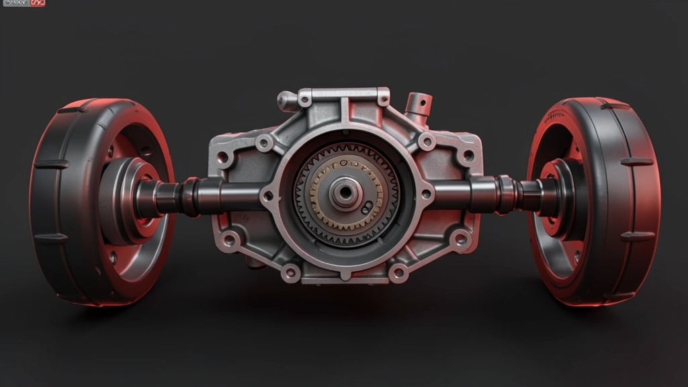
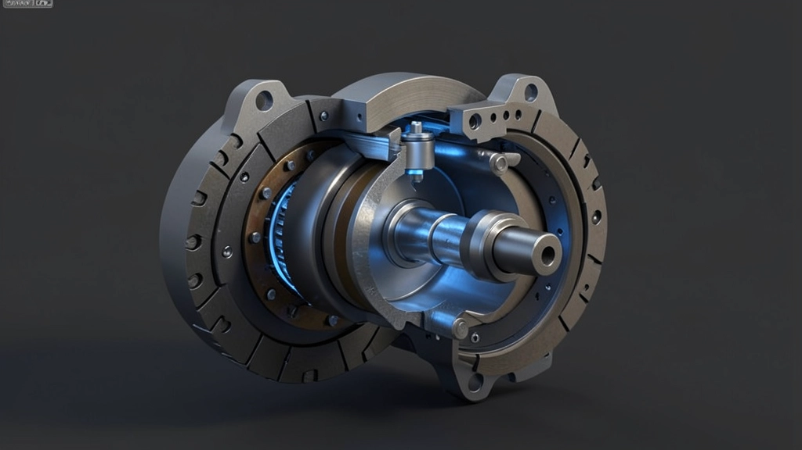

Тяга на все четыре колеса
И на асфальте, и в грязи — цель одна: использовать сцепление всех колёс.
Джипы и кроссоверы · 1995–2007
Япония · Корея · Америка · Германия — как каждая страна делила момент между колёсами
Общее
Как ни различаются школы, фундамент у всех один. Разница — в том, кому и когда отдать момент.
И на асфальте, и в грязи — цель одна: использовать сцепление всех колёс.
Раздаточная коробка, межосевой узел, блокировки. Набор общий — компоновка разная.
Как поделить момент между осями и колёсами — и кто решает: водитель или электроника.
От механики и рычагов — к муфтам, датчикам и автоматике.
Основа сравнения
Вся эпоха укладывается в три схемы. Дальше каждая страна выбирала свою и доводила до совершенства.

Жёсткое подключение передней оси, без межосевого дифференциала. Только для бездорожья — на асфальте задний привод.

Межосевой дифференциал — езда всегда на четырёх. Блокировки подключаются для грязи.

Автоматическое подключение оси, электроника и датчики. Для асфальта и лёгкого бездорожья.
Школа 01 · Япония
Япония не выбирала одну схему — она дала все. От рамных монстров с блокировками до первых кроссоверов с муфтами.
Pajero: и постоянный привод, и жёсткое подключение, и понижайка — в одной раздатке.
Симметричная трансмиссия, вискомуфты, позже электроника и распределение момента.
От честного механика Land Cruiser с блокировками до первых умных муфт RAV4.
Японцы дали и честный механик, и первые интеллектуальные системы.
Школа 02 · Корея
Корея взяла готовые решения и сделала их доступными. Полный привод перестал быть роскошью.
Hyundai, Kia, SsangYong: привод — практичная опция, а не философия марки.
Муфты и электроника по образцу японцев — но проще и дешевле в производстве.
По конструкции — почти как у лидеров, по цене — заметно доступнее.
Важнее инженерии — чтобы работало и не стоило лишнего.
Школа 03 · Америка
Америка не гналась за асфальтом. Здесь полный привод — про то, чтобы выехать оттуда, куда другие не заедут.
Jeep, Ford, Chevrolet: рама, мосты, минимум компромиссов.
Жёсткое подключение, мосты Dana, понижающие ряды.
Честные блокировки дифференциалов — для настоящей грязи.
Проходимость важнее поведения на асфальте.
Школа 04 · Германия
Германия сделала полный привод незаметным. Он не про бездорожье — он про уверенность и комфорт на дороге.
Постоянный привод, межосевой дифференциал, позже Torsen.
Электроника и распределение момента для плавности хода.
Активное распределение момента между осями в реальном времени.
Полный привод как про управляемость, а не про грязь.
Сравнение
Четыре школы, четыре приоритета. Ни одна не лучше — каждая решала свою задачу.
| Школа | Тип системы | Приоритет | Сильная сторона |
|---|---|---|---|
| Япония | Full-time + муфты | Технологии | Универсальность |
| Корея | Муфты | Цена | Доступность |
| Америка | Part-time | Проходимость | Надёжность в грязи |
| Германия | Full-time + электроника | Асфальт | Управляемость |
Тренд эпохи
За десять лет полный привод прошёл путь от рычагов и блокировок до электроники, которая решает за водителя.
Блокировки, понижайки, рычаги. Водитель решает сам.
Первые электронные имитации блокировок, вискомуфты.
Датчики, распределение момента, проходимость «по кнопке».
Электроника берёт на себя то, что раньше делал водитель.
Ключевое сообщение
Каждая школа отдала что-то, чтобы получить главное. Вопрос не в том, какая система лучше, а в том, что нужно вам.